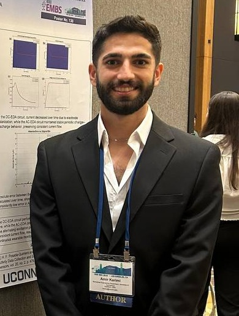
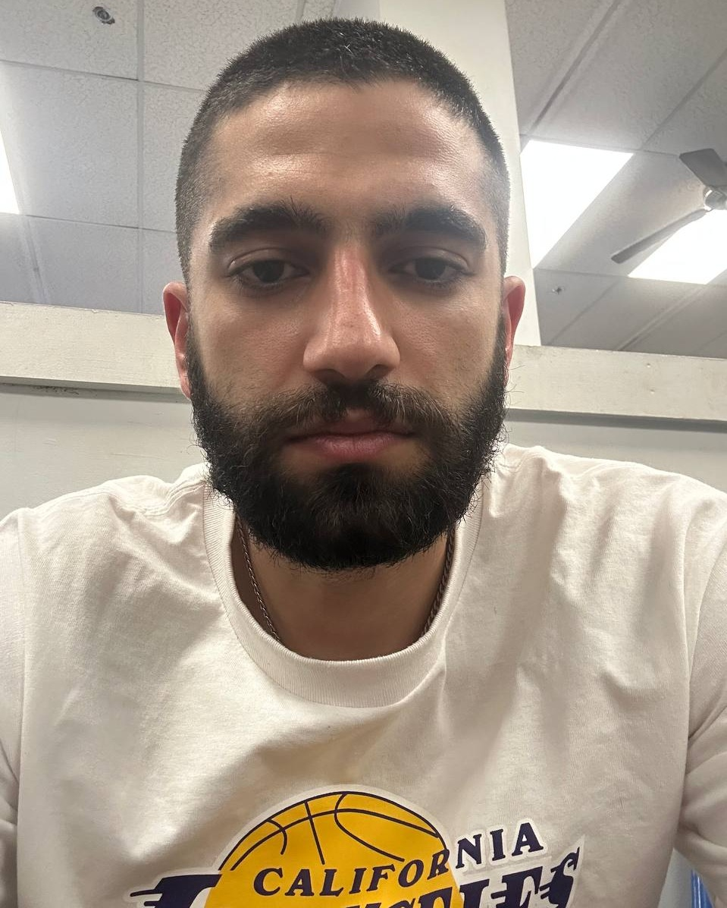
I went with the suit pic.
But honestly I'm almost always in a t-shirt, looking miserable because my circuit is showing weird signals or smells hot.
Hover ↑ to see the real me.
Nah, I'm not a Lakers fan. Bulls forever! Though let's be real, we've been struggling since MJ retired. I've pretty much never seen a winning Bulls team.
I'm in the final stretch of my Ph.D. in Biomedical Engineering and actively looking for an engineering internship before I transition into industry.
Through CPT, I'm available for internships ranging from 3 to 12 months starting August 2026.
Open to relocating anywhere in the U.S.
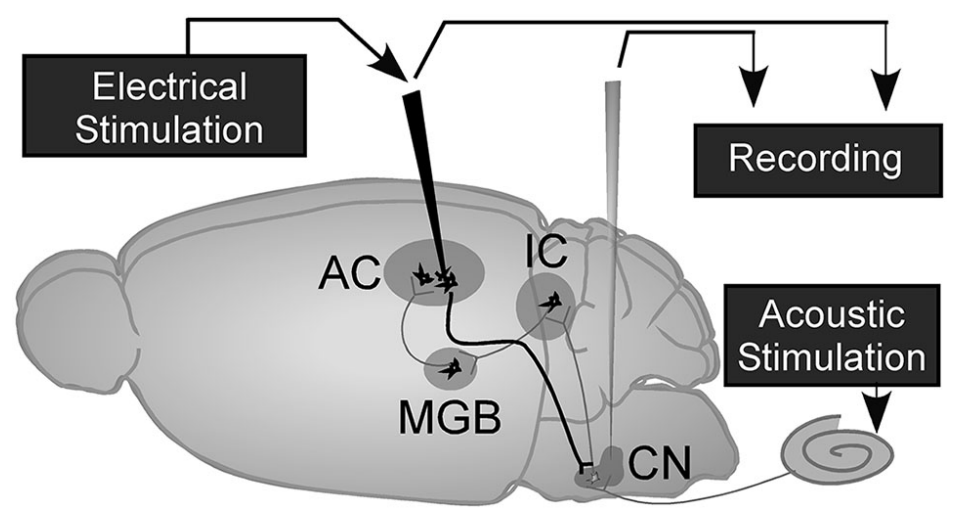
One of my hardware projects was a custom neurostimulation PCB designed to overcome one of the biggest limitations in neural interfaces: safely injecting enough charge into tissue without exceeding electrochemical safety limits at the electrode–tissue interface.
To address this, I implemented an anodic-bias technique that pre-biases the electrode by up to +600 mV before the stimulation pulse, effectively expanding the safe charge-injection window and enabling significantly higher stimulation currents without leaving the electrode's safe operating region.
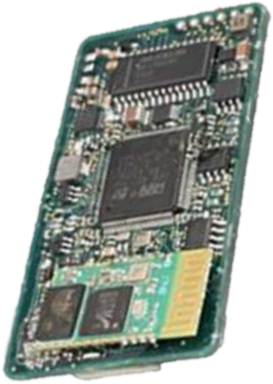
The system is built around an STM32F767 microcontroller that handles waveform generation, real-time monitoring, and wireless communication. I also designed the complete mixed-signal hardware stack, including precision current drivers, analog front-end circuitry, high-speed data acquisition, power management, and battery-powered operation. The result is a portable research-grade neurostimulator that combines embedded systems, analog design, and electrochemical safety monitoring into a single platform.
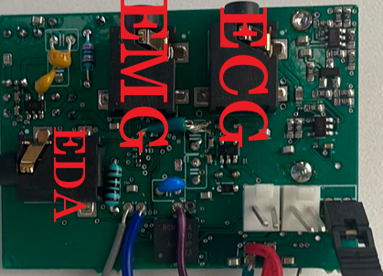
I designed a multimodal biosignal acquisition platform that records EDA, ECG, and sEMG on a single PCB. The part I designed from scratch was the EDA front end, where I used an AC-excitation architecture to avoid electrode polarization and improve long-term measurement stability.
For the ECG and sEMG channels, I adapted well-established front-end designs from the literature and integrated them into the same system. The real challenge was getting three very different analog circuits to live on the same board without constantly interfering with each other.
The reason for combining all three signals is that one biosignal alone rarely tells the full story. By recording skin conductance, heart activity, and muscle activity simultaneously, you get a much better picture of what's happening physiologically — and all the data is perfectly synchronized because it comes from the same device.
Unlike my neurostimulation project, this system was tested on human subjects. I validated the hardware against commercial reference devices and used it during physiological experiments.
Companies like PLUX Biosignals make commercial multimodal systems, and I always thought it would be fun to build my own version. Plus, as an engineer, it's hard to resist the temptation to put more circuits on the same PCB and see if they can all get along.
Most of these projects are from my undergraduate years (2018–2022). After that, I started my PhD and shifted my focus toward the two larger research projects described on the left.
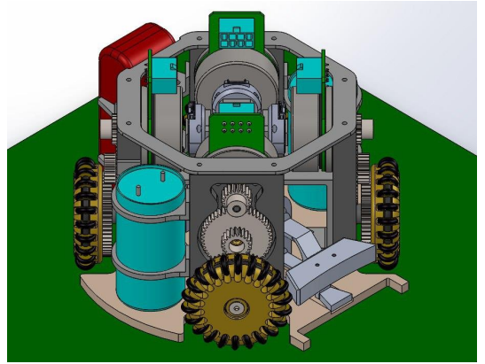
Back in Iran, I was part of a RoboCup Small Size robotics team as a hardware engineer. Most of my time was spent designing, debugging, and fixing electronics that inevitably decided to fail five minutes before competitions.
If you're curious about the details, we also sent a team report over to the RoboCup federation. You can read it here.
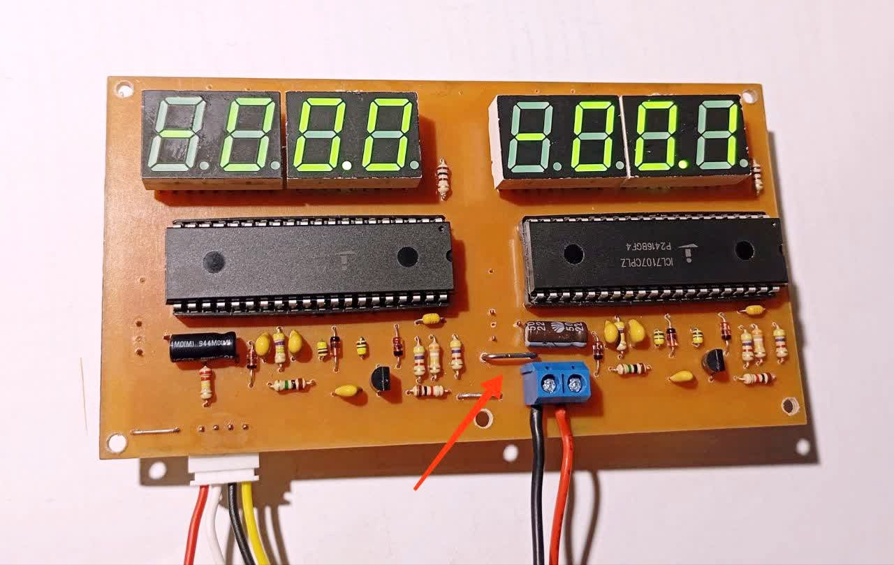
During the COVID lockdown in 2020, I got frustrated with the cheap voltmeters I had available, so I built my own precision voltmeter. Looking back, the PCB layout is far from perfect, but I was still an undergraduate and learning by doing. It worked, and that's what mattered.
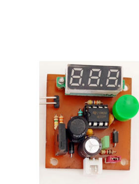
After sacrificing one too many Zener diodes trying to measure their breakdown voltage, I decided to build a dedicated tester that could display the actual breakdown voltage accurately without turning components into smoke generators.
None of these projects are particularly groundbreaking from a scientific perspective. They were mostly driven by curiosity, stubbornness, and the inability to leave an engineering problem alone once it annoyed me enough. In many ways, these small side projects are what built my hardware intuition and probably explain why I eventually ended up pursuing a PhD.
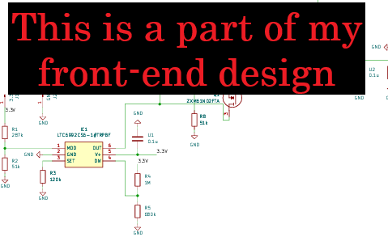
For Project 2 (multimodal biosignal platform), I designed discrete instrumentation amplifier stages with very high input impedance to suppress 50/60 Hz mains interference and motion artifacts at the electrode–skin interface. I also integrated and optimized commercial ECG and sEMG AFEs, tuning passbands to reduce baseline wander and out-of-band noise. I developed AC-excitation architectures for the EDA channel to prevent electrode polarization and half-cell potential buildup. This included generating a sine-wave excitation chain using oscillators followed by higher-order Sallen–Key low-pass filters to remove harmonics from square waves. On the readout side, I used precision transimpedance amplifiers (TIAs) optimized for gain-bandwidth, phase margin, and long-term stability under dynamic load conditions.
On power architecture, I design low-noise, heavily decoupled systems with high PSRR to isolate analog channels from digital switching noise. I implement multi-rail power trees using low-noise LDOs for analog rails and switching converters for negative rails, enabling split-supply operation for improved op-amp linearity and dynamic range. I also integrate battery management ICs for safe USB recharging while maintaining a low noise floor.
For Project 1 (16-channel neurostimulator), I focused on precision current drive using high-output-impedance Howland current pumps for constant-current delivery under varying tissue impedance, ensuring voltage compliance. I implemented SPI-controlled digital potentiometers for programmable anodic biasing and charge injection control. To ensure safety, I added high-speed multiplexed ADC monitoring of voltage transients, forming a closed-loop safety system to prevent tissue damage.
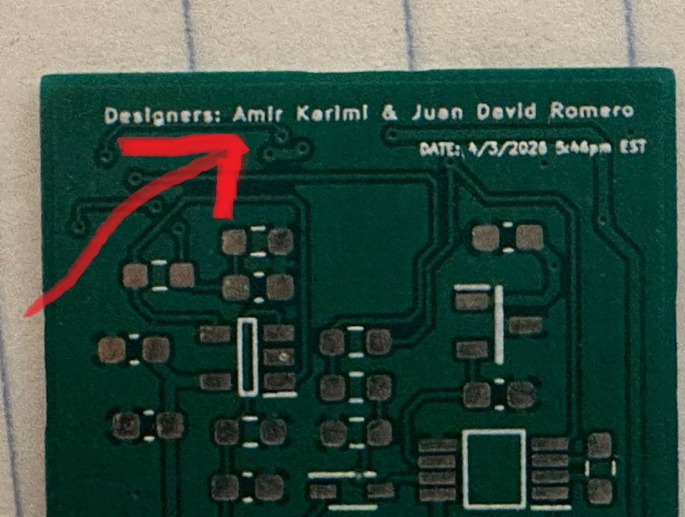
i usually write my name like this :)
Transitioning these concepts to a physical board is where my multi-layer PCB design experience comes in. I am fluent in managing the entire hardware lifecycle — from schematic capture to component placement and routing. I primarily use KiCad for agile prototyping, which I used to design the 4-layer board for Project 2, and Altium Designer for collaborative stack-ups, which I used alongside a postdoctoral researcher for the 6-layer board in Project 1. I know how to tackle the hardest part of mixed-signal PCB design: routing loud digital microcontrollers and wireless communication modules right next to quiet analog paths without continuous interference. By implementing strict layout practices like strategic decoupling, physical ground plane isolation, and crosstalk mitigation across both 4-layer and 6-layer boards, I deliver compact, portable, and reliable research-grade hardware ready for fabrication ordering from the best vendor jlcpcb.
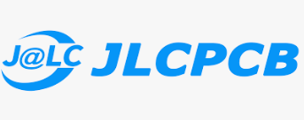
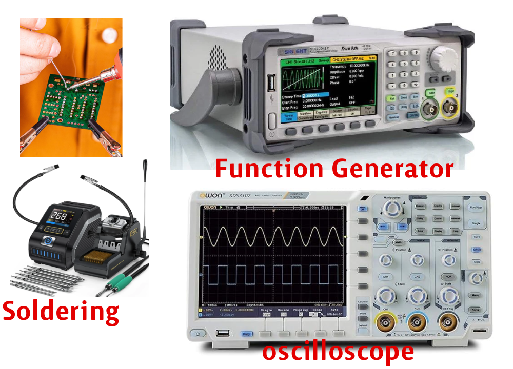
Every hardware engineer ends up learning this the hard way, undergrad labs don't really teach it beyond basic soldering, but it becomes essential fast in real prototyping.
I'm comfortable with benchtop debugging using oscilloscopes, PicoScopes, and function generators to track noise, artifacts, and signal integrity issues in real time.
I also have hands-on experience with micro-soldering and PCB rework during rapid prototyping cycles.
Beyond building circuits, I focus on system validation!! running human-subject physiological tests and benchmarking against commercial reference devices to verify real-world performance and reliability.
Gotta give a huge shoutout to LTspice. Being able to simulate analog front ends for exactly $0 before wasting money on bad PCBs is a lifesaver. I even published papers based on my simulations!
I specialize in bare-metal firmware development using Embedded C ("I still don't know why I feel bad about not putting 'C/C++' on my CV, cuz whatever I do is C, not C++! I used to think it was a bad excuse, but yeah, I just haven't needed the OOP baggage. When you are writing drivers, doing low-level bring-up for custom fabricated PCBs, or bit-banging, the abstraction of C++ gets in the way. Pure C lets me stay as close to the bare metal as possible."), targeting advanced ARM Cortex-M7 and Cortex-M4 architectures.
Like a lot of people, I started my embedded journey with an Arduino board. From there, I moved to bare-metal AVR using the ATmega328.
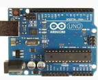
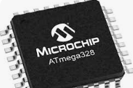
Then the 2020–2021 silicon shortage hit, and I realized I needed to pivot to STM32. It took some time to really learn and understand the architecture, but by the time I started my PhD back in 2022, I was fully working as an STM32 embedded engineer.
My hardware experience spans robust microcontroller ecosystems, which I have applied directly to complex, custom-designed boards. For example, in a recent project developing a high-precision programmable current source (Project 1), I built the core firmware and mixed-signal architecture around the STM32F7. For another synchronous multi-channel data acquisition node (Project 2), I utilized the Silicon Labs STM32F4 Bluetooth MCU to manage multiple analog front-ends.
Across these systems, I am highly proficient with industry-standard toolchains, utilizing the Keil µVision 5 IDE for rigorous code development and STM32CubeMX for configuring the Hardware Abstraction Layer (HAL) and managing complex pin routing. Furthermore, bringing these custom boards to life requires hands-on expertise in executing hardware-level troubleshooting, utilizing Serial Wire Debug (SWD) interfaces and ST-Link adapters to debug directly on the silicon.
To achieve optimal system performance and lower-level control, I transitioned away from vendor-supplied HAL in favor of strictly bare-metal, register-level programming. It is more fun!
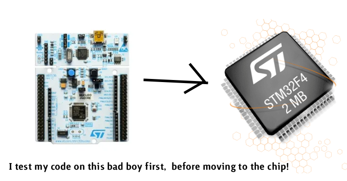
I spend most of my time really deep in the weeds with low-level peripherals, making sure the communication in mixed-signal systems is bulletproof. A big part of that has been writing custom SPI drivers from scratch. The main reason I do this instead of relying on standard libraries is to guarantee high-speed, reliable data transfer across different architectures without any hidden bottlenecks.
For example, in my STM32 current source board (Project 1), I needed that custom SPI to tightly control external 12-bit DACs and digital potentiometers. I also used custom SPI in my multi-channel DAQ platform (Project 2) to drive micro-SD cards; I needed continuous edge-logging, and a custom driver was the best way to ensure the system didn't hang while writing data.
For wireless telemetry, I keep things asynchronous and reliable by configuring UART ports at a 9600 baud rate to talk to Bluetooth SPP modules. It gives me a stable pipeline to get data out of the system. On the sensing side, I push internal 12-bit SAR ADCs pretty hard, running them at high sampling rates up to 354 kSpS. The specific reason I need it that fast is to ensure I can accurately capture high-speed voltage transients that a slower sample rate would completely miss.
I pair that with really precise discrete GPIO control to manage timed step-function switching exactly when the system demands it. Because everything I do has incredibly strict timing constraints, I spend a lot of time doing advanced clock management. In Project 1, for instance, I couldn't rely on default clock settings. I had to configure the MCU core clock to exactly 96 MHz using external oscillators, internal PLLs, and frequency dividers. The whole reason for diving that deep into the clock tree was to lock in a rigid, 1-microsecond resolution so my custom waveform generation wouldn't drift.
Pulling in all that high-speed data creates memory bottlenecks. To optimize the data pipelines and prevent the system from choking, I set it up to write the raw, digitized 12-bit data directly into the MCU's internal flash memory. It is the best way to ensure absolutely zero data loss during those heavy, high-speed acquisition bursts.
At the end, I'm still learning!
I spent two years working in a neuroprosthesis lab, doing a ton of neuromodulation. Basically, that meant working on the hardware and signal pipelines that deliver targeted electrical stimulation to nerves to alter their activity, so a lot of dealing with precise pulses and waveform generation. Then, in 2024, I transitioned over to a biomedical device and processing lab.
Because my work shifted heavily toward biosignals, I had to dive deep into Digital Signal Processing (DSP). I mean, I was building the devices, so I had to validate them! I needed to prove that my hardware's output actually matched a clinical reference device. That pushed me into doing my own time-frequency domain analysis and feature extraction on biosignals, like the EEG processing and cardiovascular modeling I was doing. We definitely have better, dedicated signal processors in the lab, but I needed to get my hands dirty and do that validation myself too.
The only catch is that I did almost all of that DSP and Simulink modeling in MATLAB! Once I realized that industry companies don't really use MATLAB that much, I finally bit the bullet and started learning Python about four months ago.
Where am I at with Python right now? Honestly, if you take away my AI tools, I can write scripts to plot and visualize my circuit data, a very classic 'hardware engineer trying to code' vibe! I know I definitely need to put in more hours to get comfortable doing the advanced DSP and signal processing stuff natively in Python.
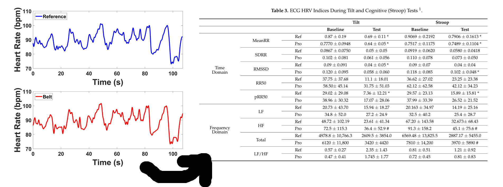
By 'validation,' I just mean plotting the data against each other and pulling out some key features to prove my hardware gets the exact same results as the reference device.